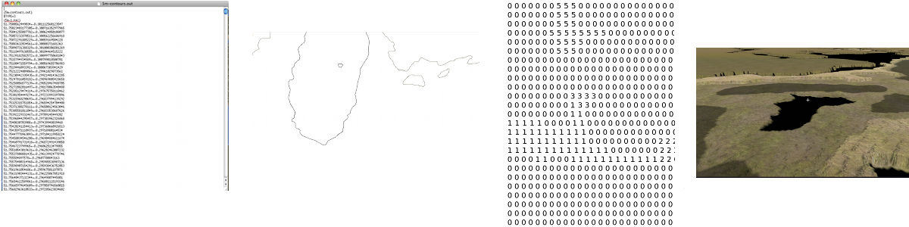

Previous: Navigation
In this tutorial we will have a look at creating a simple 3D cartography application that allows you to display 3D charts at different zoom levels.
This tutorial assumes that you know:
About the Navigation package.
How to create a 3D landscape using image-based heightmaps.

You will learn that how to account for distortions that arise when mapping of one coordinate system into (i.e. when converting longitude/latitude into JME’s World Units), how to construct a tile tree and how to render a dynamic mercator grid.
This article was sponsored by PlanetMayo Ltd
Displaying your first chart
Let’s think about how we are going to get JME to display our terrain. The easiest way is to use JME’s`ImageBasedHeightMap`. Recall from the Hello Terrain tutorial that these are grayscale images which JME uses to create a terrain quad. So, in order to display a chart, we need an image of a (two-dimensional) mercator projection (such as the one depicted below), which we then load using:
Texture heightMapImage = assetManager.loadTexture(DEFAULT_HEIGHTMAP);
heightmap = new ImageBasedHeightMap(heightMapImage.getImage());
heightmap.load();
terrain = new TerrainQuad("terrain", 257, TERRAIN_SIZE, heightmap.getHeightMap());
applyDefaultTexture();
In essence, 3D chart visualization is achieved by converting the polygons composing planet earth’s landmass into float matrices whereby each value within the matrix represents a specific terrain height. For example, given a terrain of 100 x 100 world units, we construct a heightmap by creating a 100 x 100 matrix. Each cell within the matrix corresponds to a terrain coordinate; each cell’s value to that coordinate’s desired height. But you already knew that, so where’s the tricky part? Well, when visualizing a chart an accurate projection requires a translation of latitude/longitude coordinates into their equivalent world unit (x,y,z) counterparts. This translation however is not a straight forward mapping of one coordinate system into the other due to the distortion arising from projecting an oblate spheroid onto a flat surface (see my previous wiki article here). This means that if one would adhere to a linear scale, the Mercator projection would distort the size and shape of objects as the object distances itself from the equator, eventually resulting in infinite scaling as the pole is reached. So the first task at hand, is to construct accurate 2D projections of planet earth which we can then use as heightmaps. We can achieve this using the jme3.tools.navigation package and co-ordinate sets available at noaa.gov.
As previously discussed, the distortion in latitude is derived by using the difference in meridional parts between the chart’s centre and the current position as a baseline; through converting the difference to world units by dividing it by the number of world units contained within one minute, a latitude’s y-coordinate can be obtained. Calculating a position’s x-coordinate is somewhat easier as the distortion only applies to latitude, not longitude. Therefore x merely equals the sum or difference between itself and the viewport’s centre coordinate, depending on the relative location of the position itself and the chart’s centre. Despite being able to convert between the two coordinate systems, slight precision problems remain once the chart projection is scaled down past a level of 6 meters. This is caused by the pixel referencing system of modern displays being integer based; once the ratio of minutes to pixels exceeds the aforementioned threshold, slight inaccuracies are introduced into the display. However this is of little relevance to most GIS (such as Debrief) as a) the inaccuracies are a matter of meters (or even centimetres) and b) it is impossible to notice this variation as GPS exposes a much higher inaccuracy (between 10 - 100 meters).
To lessen the computational load, coordinate system conversion should only takes place when either the chart is re-centered or a change in scale / resolution is requested. Once converted, the coordinate sets are rendered to a buffer whose contents is then drawn for every UI update cycle. |
.
Creating your heightmaps
There are two ways to create your heightmaps (also referred to as 'tiles' as each heightmap is a tile that composes our chart of the world). One is to use third-party software such as GeoTools. The other is to use the jme3.tools.navigation package to write a tile generator:
public class TileGenerator {
private int lineCount;
/* List of polygons representing the countries that are to be drawn. */
private List<PositionContainer> polygons;
/* The map projection used to generate the chart image. */
private MapModel2D map;
/* The chart's resolution in minutes of longitude per pixel. */
private double mpp;
/* The chart's centre. */
private Position centre;
/**
* Constructs a new instance of TileGenerator.
*
* @param worldSize The width of the chart for which tiles are to be
* generated.
* @since 1.0
*/
public TileGenerator(int worldSize, double mpp, Position centre) {
File dataDirectory = new File("data");
map = new MapModel2D(worldSize);
lineCount = 0;
File[] files = dataDirectory.listFiles(new FileFilter() {
public boolean accept(File pathname) {
if (pathname.toString().endsWith(".out")) {
return true;
}
return false;
}
});
loadChartData(files);
this.mpp = mpp;
this.centre = centre;
}
public void createImageMap(int worldSize) {
map.setCentre(centre);
map.calculateMinutesPerPixel(mpp);
System.out.println("Generating chart with world width (in pixels): " + worldSize);
System.out.println("Generating chart with meters per pixel: " + map.getMetersPerPixel());
BufferedImage img = new BufferedImage(worldSize,
worldSize, BufferedImage.TYPE_BYTE_GRAY);
Graphics2D g = img.createGraphics();
Point point1, point2;
GeneralPath polygonPath;
g.setColor(Color.WHITE);
int containerSize;
for (PositionContainer container : polygons) {
polygonPath = new GeneralPath();
containerSize = container.getPositions().size();
for (int i = 1; i < containerSize; i++) {
point1 = map.toPixel(container.getPositions().get(i));
point2 = map.toPixel(container.getPositions().get(i - 1));
polygonPath.moveTo((double) point1.getX(), (double) point1.getY());
polygonPath.lineTo((double) point1.getX(), (double) point1.getY());
polygonPath.lineTo((double) point2.getX(), (double) point2.getY());
}
g.draw(polygonPath);
}
// Write resulting image to file
try {
ImageIO.write(img, "png", new File("map.png"));
} catch (IOException ioe) {
ioe.printStackTrace();
}
}
/**
* Draws depth contours.
*
* @param img The image to draw to.
* @param worldSize The size of the chart.
* @since 1.0
*/
private void drawContours(BufferedImage img, int worldSize) {
map.setCentre(centre);
map.calculateMinutesPerPixel(mpp);
BufferedImage img2 = new BufferedImage(worldSize,
worldSize, BufferedImage.TYPE_BYTE_GRAY);
Graphics2D g = img2.createGraphics();
g.drawImage(img, null, null);
Point point1, point2;
GeneralPath polygonPath;
// g.setColor(new Color(21, 21, 21));
g.setColor(Color.WHITE);
int containerSize;
for (PositionContainer container : polygons) {
polygonPath = new GeneralPath();
containerSize = container.getPositions().size();
for (int i = 1; i < containerSize; i++) {
point1 = map.toPixel(container.getPositions().get(i));
point2 = map.toPixel(container.getPositions().get(i - 1));
polygonPath.moveTo((double) point1.getX(), (double) point1.getY());
polygonPath.lineTo((double) point1.getX(), (double) point1.getY());
polygonPath.lineTo((double) point2.getX(), (double) point2.getY());
}
g.draw(polygonPath);
}
// Write resulting image to file
try {
ImageIO.write(img2, "png", new File("map.png"));
} catch (IOException ioe) {
ioe.printStackTrace();
}
}
/**
* Loads country border information from .out files, parses the information
* and stores it as a PositionContainer which is later used to
* produce the .png chart image.
*
* @param files A List of files that contain
* country border data.
* @since 1.0
*/
private void loadChartData(File[] files) {
Scanner scan;
PositionContainer countryBorderPosition;
polygons = new ArrayList<PositionContainer>(300);
String tmp = "";
String tmpLat;
String tmpLong;
StringTokenizer stk;
Position pos;
for (File file : files) {
try {
scan = new Scanner(file);
countryBorderPosition = new PositionContainer();
while (scan.hasNext()) {
tmp = scan.nextLine();
if (tmp.startsWith("{") || tmp.startsWith("$") || tmp.startsWith(";")) {
continue;
}
if (tmp.equals("-1")) {
polygons.add(countryBorderPosition);
countryBorderPosition = new PositionContainer();
continue;
}
stk = new StringTokenizer(tmp, " +");
while (stk.hasMoreTokens()) {
tmpLat = stk.nextToken().trim();
if (tmpLat.equals("-1")) {
polygons.add(countryBorderPosition);
countryBorderPosition = new PositionContainer();
continue;
}
tmpLong = stk.nextToken().trim();
pos = new Position(Double.parseDouble(tmpLat), Double.parseDouble(tmpLong));
countryBorderPosition.add(pos);
lineCount++;
}
}
} catch (Exception e) {
e.printStackTrace();
System.err.println(tmp);
}
}
}
public static void main(String[] args) {
System.out.println("Debug 3D Tile Generator");
System.out.println("===========================");
args = new String[3];
args[0] = "1.2";
args[1] = "51.8";
args[2] = "-8.3";
if (args.length < 3 || args.length > 3) {
System.err.println("Incorrect argument usage. Should be mpp latitude longitude");
System.err.println("Exiting");
return;
}
String mppStr = args[0];
String latitudeStr = args[1];
String longitudeStr = args[2];
double lon, lat, mpp;
Position centre;
try {
mpp = Double.parseDouble(mppStr);
} catch (Exception e) {
System.err.println("MPP must be of type Double or Integer.");
System.err.println("Exiting");
return;
}
try {
lat = Double.parseDouble(latitudeStr);
} catch (Exception e) {
System.err.println("Latitude must be of type Double or Integer.");
System.err.println("Exiting");
return;
}
try {
lon = Double.parseDouble(longitudeStr);
} catch (Exception e) {
System.err.println("Longitude must be of type Double or Integer.");
System.err.println("Exiting");
return;
}
try {
centre = new Position(lat, lon);
} catch (InvalidPositionException ipe) {
System.err.println("Invalid latitude or longitude coordinates.");
System.err.println("Exiting");
return;
}
System.out.println("Generating chart...Please wait...");
TileGenerator generator = new TileGenerator(TerrainViewer.TERRAIN_SIZE - 1, mpp, centre);
File chart = new File("map.png");
if (!chart.exists()) {
generator.createImageMap(TerrainViewer.TERRAIN_SIZE - 1);
}
try {
BufferedImage img = ImageIO.read(chart);
generator.drawContours(img, TerrainViewer.TERRAIN_SIZE - 1);
} catch (Exception e) {
e.printStackTrace();
}
System.out.println("Chart generated. Placed in file 'chart.png'. Exiting.");
}
}…where .out file contains longitude / latitude coordinate pairs defining landmass contours. Here an extract:
51.79188150756147+-8.25435369629442
51.79184641740534+-8.254357553715453
51.79182071886024+-8.254353833180712
51.79181370477922+-8.254312317813477
51.79181369284153+-8.254267011113086
51.79182535405747+-8.254221642581026
51.79184870922772+-8.254183732747943
51.79188146269924+-8.254183530764353
51.79190724220316+-8.254221208836046
51.79190960635914+-8.254296874457655
51.79188150756147+-8.25435369629442
-1
51.79165344300885+-8.255042583168985
51.79161872648091+-8.255072177259352
51.79158175153456+-8.255082912194254
51.79156558301037+-8.255041382314799
51.79156556852833+-8.254985072910559
51.79158171385971+-8.254936452917438
51.79159555664058+-8.25487274689492
51.79161403682817+-8.254824070938184
51.79164411466118+-8.254798004805433
51.79168584436759+-8.254817161260844
51.79170675060084+-8.25487006519348
51.79169051462138+-8.254930145346941
51.79167197282713+-8.254993914789209
51.79165344300885+-8.255042583168985(-1 acts as a separator, denoting the end of one polygon and the beginning of another).
So what’s happening here? Well, we basically read the contents of all specified files, whereby each line is broken up into longitude/latitude pairs, converted into pixel (x,y) coordinates and used to construct a polygon which is added to a polygon container once a polygon separator is encountered. Once the object’s paint method is called, this polygon container is iterated and any polygons falling within the canvas (aka viewport) bounds are painted to the graphics context. Essentially, this algorithm can be summarized as follows:
Constructor ( files ):
for each file in files
for each line in file
if line == -1
polygonList.add(polygon)
new polygon
else
polygon.add(parse(line))
Paint ( graphics context ):
for each polygon in polygonList
if polygon inside view bounds
graphics context.paint(polygon) Above: Summarizing process of visualizing a chart. From left to right: We draw the coordinates downloaded from noaa.gov. Ideally, each polygon should be filled in a light colour, whilst the surrounding ocean remains dark. JME uses these images to create an internal representation of the terrain (a float matrix).
The heightmaps produced by the TileGenerator are essentially arrays containing float values ranging from 0 to 255. For convenience and efficiency, JME treats these arrays as Portable Network Graphic (PNG) images (again, see the Hello Terrain tutorial). This allows us to store each tile as an image, meaning that each tile will only need to be constructed once. Essentially what the tile generator therefore does is draw a greyscale image of each tile whereby dark colours (i.e. low values from 0 - 50) are valleys and high values (200 - 255) become mountains or hills. In order to maintain scale, these values are scaled by dividing the seabed’s maximum height (in meters) by the meters per pixel of the current chart.
With only a few specified points, JME interpolates the rest, making terrain construction using heightmaps more efficient than defining individual vertices for each pixel on the chart.
A tile’s texture is defined by its ”Alphamap”. This is a copy of its heightmap, but instead of defining height values, the floats composing the alphamap image define textures. For this purpose, a method known as ”texture splatting” is employed, whereby texture data is colour coded. That is, assuming that a spatial has two texture layers (let’s call them Tex1 and Tex2), each layer is associated with a colour: in the case of Debrief 3D, blue refers to a sand texture and red refers to dirt/grass textures. Although such an approach to texturing may sound confusing at first, it has the advantages that both heightmaps and alphamaps can be created in one go, and, as they are based on the same principle, can easily be modified in batch rather than individually.
What’s all this talk about tiles?
A tile tree is our way of keeping track of individual tiles. All that it is, is a set of nested sub-directories that holds charts. The top-level directory (our root) contains a chart of the entire world, and each sub-directory an enlarged area of our planet. For example, inside the root, we may have folders that contain a chart just for Ireland, the UK and France. As we traverse the tree further, we get the individual counties or provinces for each country. One way for us to represent this mess of directories, is via a Search Tree.
Creating a tile tree
try {
File resourceDirectory = new File(worldResourcesDirectory);
if (!resourceDirectory.isDirectory()) {
System.out.println("Resource path must be a directory");
System.exit(1);
}
worldStructure = new TileTree(resourceDirectory);
} catch (Exception e) {
e.printStackTrace();
}Upon initialization, these tiles are read into memory by the TileTree object which treats, as the name suggests, the tiles composing the chart as a tree whereby the root node refers to the entire globe. Its children refer to sub-sections of the globe, and its children in turn to sub-sections of that sub-section. For example, the ”Ireland” node is a direct child of the root node. The ”Cork Harbour” node in turn is a direct child of the ”Ireland” node and represents an enlarged version of a sub-section of the Irish coast. Each such Node consists of a unique ID (used to identify the node), a list of child nodes, a path to the heightmap (tile) that it represents, the zoom level (referred to as the longitude level as the zoom is defined by minutes of longitude per pixel) and a latitude/longitude pair denoting the tile’s centre.
Each heightmap is rendered depending on which ID the user selects (where each node in the tree is listed by its unique ID). As an ID is selected, the tree is traversed to find the node matching the given ID. The path to its heightmap is extracted and the heightmap is rendered by extracting the float array from the loaded image (that is, a texture object is created and loaded with the heightmap. A ImageBasedHeightMap object is then used to convert the heightmap and alphamap into corresponding height and texture arrays). → again, see JME tutorial on terrain.
The Tile Tree’s contents is stored in assets/Heightmaps, and each directory level is composed of one descriptor file, one heightmap (in the form of a PNG image) and one alphamap (also in the form of a PNG image). The descriptor files end in a.desc filename extension and contain the geo-coordinate centre of the tile as well as the resolution of the node that they are representing (as always, the resolution is represented in minutes per pixel (mpp)). A descriptor file’s sole purpose is to allow the re-construction of the tile tree upon application initialization. Specifically, this is achieved by the ChartModel object which instantiates the TileTree, passing a reference to assets/Heightmaps, which TileTree then recursively scans, constructing the tree by interpreting the descriptor files. It is worth noting that all files per level should be named according to the heightmap tile that it represents. That is, if your level represents a chart of Ireland and your heightmap is named Ireland.png then your descriptor file should be named Ireland.desc, while your alphamap should be named Ireland.png.Alphamap.png.

 Above: A look inside the “Ireland node. We can see the heightmap, descriptor file and alphamap.
Above: A look inside the “Ireland node. We can see the heightmap, descriptor file and alphamap.
/*
* To change this template, choose Tools | Templates
* and open the template in the editor.
*/
package util.datastructure;
import java.io.File;
import java.util.ArrayList;
import java.util.List;
import java.util.Scanner;
import jme3tools.navigation.Position;
/**
* The TileTree handles the storage and retrieval of individual
* charts. Each Node corresponds to one chart (a node's value being
* the chart's absolute path. It's ID being the ID under which it is displayed).
*
* The tree reflects the application's chart directory structure, with the world
* as its root and individual countries as its children. Sub-children of these nodes
* represent "close up" version of each country / geographic sub areas of those countries.
*
* @author Benjamin Jakobus
* @since 1.0
* @version 1.0
*/
public class TileTree {
/* The tree's root node. */
private Node root;
/**
* Creates a new instance of TileTree. Nodes are generated
* depending on the contents of the resource directory.
*
* @param resourceDirectory The root of the application's resource
* directory (the resource directory being the
* directory in which all charts (aka Heightmaps)
* are being stored).
* @since 1.0
*/
public TileTree(File resourceDirectory) {
File directory = null;
for (File f : resourceDirectory.listFiles()) {
if (f.isDirectory()) {
directory = f;
continue;
}
if (f.getName().endsWith(".desc")) {
root = initNode(f);
}
}
initTileTree(directory, root);
}
/**
* Initializes the tree's children. The root node should be initialized
* prior to calling this method.
*
* @param resourceDirectory The root of the application's resource
* directory (the resource directory being the
* directory in which all charts (aka Heightmaps)
* are being stored).
* @param parentNode The Node to which all
* subsequent nodes should be attached.
* @since 1.0
*/
private void initTileTree(File resourceDirectory, Node parentNode) {
File directory = null;
Node node = null;
if (parentNode == null || resourceDirectory == null) {
return;
}
for (File f : resourceDirectory.listFiles()) {
if (f.isDirectory()) {
directory = f;
continue;
}
if (!f.getName().endsWith(".desc")) {
continue;
} else {
node = initNode(f);
}
}
parentNode.attachChild(node);
node = parentNode;
initTileTree(directory, parentNode);
}
/**
* Initializes an individual node depending on the contents of the descriptor
* file (for information on descriptor files, refer to the software documentation).
*
* @param file The descriptor File with
* which to initialize the node's contents.
* @return A new Node.
* @since 1.0
*/
private Node initNode(File file) {
Node node = null;
Scanner scan;
String resourcePath = null;
String nodeID = null;
String longitudeLevel = null;
Position centre = null;
int currentLine = 0;
if (file == null) {
return node;
}
try {
scan = new Scanner(file);
resourcePath = file.getAbsolutePath().replace(".desc", ".png");
resourcePath = resourcePath.substring(resourcePath.indexOf("assets"));
nodeID = file.getName().replace(".desc", "") + "_" + file.getParentFile().getName();
while (scan.hasNextLine()) {
if (currentLine == 0) {
String tmp = scan.nextLine();
String[] array = tmp.split("\\+");
centre = new Position(Double.parseDouble(array[0]),
Double.parseDouble(array[1]));
currentLine++;
} else {
longitudeLevel = scan.nextLine().trim();
}
}
node = new Node(nodeID, resourcePath, longitudeLevel, centre);
} catch (Exception e) {
e.printStackTrace();
}
return node;
}
/**
* Returns the Node matching the given ID.
*
* @param nodeID The ID of the Node that you
* wish to retrieve.
* @return The Node matching the given ID.
* @since 1.0
*/
public Node find(String nodeID) {
return find(root, nodeID);
}
/**
* Returns the Node matching the given ID. This method is similar
* to find() with the exception that it only begins searching from
* a certain node downwards.
*
* @param nodeToSearch The Node from which to start searching.
* @param nodeID The ID of the Node that you
* wish to retrieve.
* @return The Node matching the given ID.
* @since 1.0
*/
private Node find(Node nodeToSearch, String nodeID) {
Node newNode = null;
if (nodeToSearch == null) {
return newNode;
}
if (nodeToSearch.getNodeID().trim().compareTo(nodeID.trim()) == 0) {
return nodeToSearch;
} else {
for (Node n : nodeToSearch.getChildren()) {
newNode = find(n, nodeID);
if (newNode != null) {
return newNode;
}
}
}
return newNode;
}
/**
* Retrieves all nodes within the tree.
*
* @return A List of all nodes within the
* tree.
* @since 1.0
*/
public List<Node> getNodes() {
List<Node> nodes = new ArrayList<Node>();
getNodes(root, nodes);
return nodes;
}
/**
* Returns all the children of a specific Node.
*
* @param node The Node whose children you want.
* @param nodes The List to which to add these children.
* @since 1.0
*/
private void getNodes(Node node, List<Node> nodes) {
if (node == null) {
return;
}
for (Node n : node.getChildren()) {
getNodes(n, nodes);
}
nodes.add(node);
}
}..and the Node:
package util.datastructure;
import java.util.ArrayList;
import java.util.List;
import jme3tools.navigation.Position;
/**
* An individual node within the TileTree. Each Node
* represents an individual tile (i.e. heightmap + alphamap).
*
* @author Benjamin Jakobus
* @since 1.0
* @version 1.0
*/
public class Node {
/* The node's unique identifier. */
private String nodeID;
/* Path to the resource that the node represents (aka the node's value). */
private String resource;
/* The node's children. */
private List<Node> children;
/* The resolution (width in degrees of longitude) represented by this node.
* i.e. the resolution of the chart that the node represents.
*/
private double longitudeLevel;
/* The centre of the chart (aka tile) that the node represents. */
private Position centre;
/**
* Constructor.
*
* @param nodeID The node's unique identifier.
* @param resource Path to the resource that the node represents
* (aka the node's value).
* @param longitudeLevel The resolution (width in degrees of longitude)
* represented by this node.
* @param centre The centre of the chart (aka tile) that the
* node represents.
* @since 1.0
*/
public Node(String nodeID, String resource, String longitudeLevel, Position centre) {
this.nodeID = nodeID;
this.resource = resource;
this.longitudeLevel = Double.parseDouble(longitudeLevel);
this.centre = centre;
children = new ArrayList<Node>();
}
/**
* Returns all of the node's children.
*
* @return A List containing all of the node's children.
* @since 1.0
*/
public List<Node> getChildren() {
return children;
}
/**
* Returns the node's ID.
*
* @return The node's unique identifier.
* @since 1.0
*/
public String getNodeID() {
return nodeID;
}
/**
* Returns the path to the tile that the node represents.
*
* @return The path to the tile that the node represents.
* @since 1.0
*/
public String getResource() {
return resource;
}
/**
* Attaches a child to this node.
*
* @param child The Node to attach.
* @since 1.0
*/
public void attachChild(Node child) {
children.add(child);
}
/**
* Returns the width in degrees of longitude of the chart / resource that this
* node represents.
*
* @return the width in degrees of longitude of the chart / resource
* that this node represents.
* @since 1.0
*/
public double getLongitudeLevel() {
return longitudeLevel;
}
/**
* The centre coordinate of the tile / chart that this node represents.
*
* @return The chart's centre in terms of latitude / longitude.
* @since 1.0
*/
public Position getCentre() {
return centre;
}
}Loading a new chart is simple: all that we need to do is get the TileTree to find the chart for us (it’ll handle loading the descriptor file and just return a node):
Node node = tileTree.find(chartID);We then use the returned node, to adjust our zoom-level:
mapModel.calculateMinutesPerWorldUnit(node.getLongitudeLevel());
mapModel.setCentre(node.getCentre());Drawing the Mercator Grid
A mercator grid reflects the ”stretching” of the flat Mercator chart through the widening of the longitude / latitude lines. Using JME’s Mesh class, a 3D representation of the grid can be drawn procedurally (as opposed to pre-defining the mesh’s vertices using a 3D modelling tool such as Blender). This is achieved by defining a vector of positions, whereby each entry i within the vector denotes the starting point of a grid line, and i + 1 defining the line’s end-point. Next, the the order in which the mesh is constructed from these coordinates is defined. These are basically index pairs as the mesh consists of a set of lines, each having a start and end point. Finally, the coordinates vector and the indices are added to the mesh, which in turn is used to define the Geometry that is added to the scene graph:
public void createGrid(double longitudeLevel, float increment) {
granularity = increment;
Mesh m = new Mesh();
m.setMode(Mesh.Mode.Lines);
m.setLineWidth(1f);
float max = (longitudeLevel < 8 ? 2 : 85);
float max2 = (longitudeLevel < 8 ? 180 / 8 : 180);
Vector3f[] positions = new Vector3f[(int) (Math.ceil(max / increment) * 4) + (int) (Math.ceil(max2 / increment) * 4)];
Position pos;
int i = 0;
try {
// Calculate initial spacings for the meridians and
// parallels
// Approach the grid construction from north to south and
// east to west.
positions[0] = new Vector3f(0, 0, 0);
// Latitude lines for northern hemisphere
for (float lat = 0; lat < max; lat += increment, i += 2) {
pos = new Position(lat, 180);
positions[i] = TerrainViewer.mapModel.toWorldUnit(new Position(lat, -180));
positions[i + 1] = TerrainViewer.mapModel.toWorldUnit(pos);
}
// Latitude lines for southern hemisphere
for (float lat = 0; lat < max; lat += increment, i += 2) {
pos = new Position(lat * -1, 180);
positions[i] = TerrainViewer.mapModel.toWorldUnit(new Position(lat * -1, -180));
positions[i + 1] = TerrainViewer.mapModel.toWorldUnit(pos);
}
max = (longitudeLevel < 8 ? 180 / 8 : 180);
// Longitude lines for northern hemisphere
for (float lon = 0; lon < max; lon += increment, i += 2) {
pos = new Position(85, lon);
positions[i] = TerrainViewer.mapModel.toWorldUnit(new Position(-85, lon));
positions[i + 1] = TerrainViewer.mapModel.toWorldUnit(pos);
}
// Longitude lines for southern hemisphere
for (float lon = 0; lon < max; lon += increment, i += 2) {
pos = new Position(85, lon * -1);
positions[i] = TerrainViewer.mapModel.toWorldUnit(new Position(-85, lon * -1));
positions[i + 1] = TerrainViewer.mapModel.toWorldUnit(pos);
}
} catch (Exception ipe) {
}
int[] indices = new int[i];
int v;
for (i = 0, v = 0; i < indices.length; i += 2, v++) {
indices[i] = i;
indices[i + 1] = i + 1;
}
m.setBuffer(Type.Position, 3, BufferUtils.createFloatBuffer(positions));
m.setBuffer(Type.Index, 1, indices);
m.updateBound();
m.updateCounts();
Material mat = new Material(assetManager, "Common/MatDefs/Misc/Unshaded.j3md");
mat.setColor("m_Color", ColorRGBA.Gray);
gridGeometry = new Geometry("Grid", m);
gridGeometry.setMaterial(mat);
Vector3f worldCentre = TerrainViewer.mapModel.getCentreWu();
gridGeometry.setLocalTranslation(new Vector3f(worldCentre.getX(),
gridHeight, worldCentre.getZ()));
}